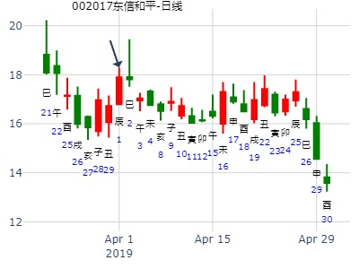
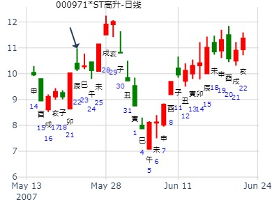
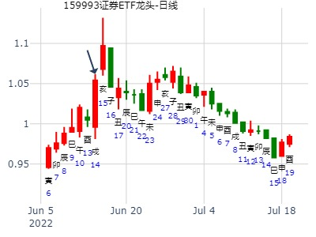
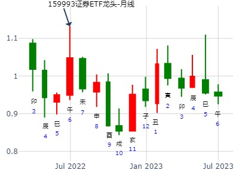
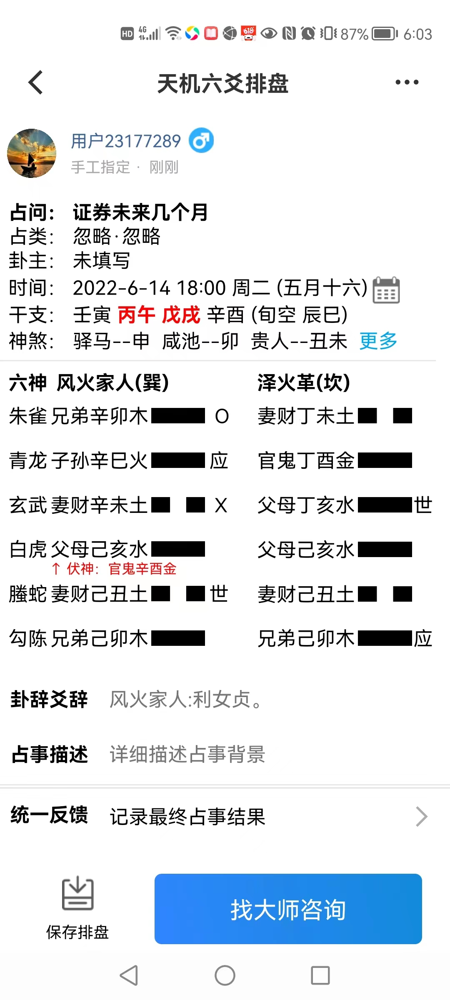
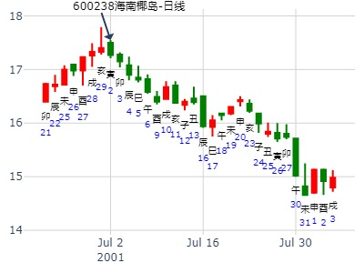
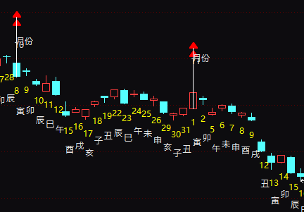

测002017东信和平在2019年4月份走势
公历起卦时间：2019年3月31日17时40分 (手工指定)
干支：己亥年 丁卯月 丁卯日 己酉时 （日空：戌亥）
神煞：驿马－巳 桃花－子 日禄－午 贵人－酉，亥
巽宫：风火家人 坎宫：泽火革
六神 伏神 本 卦 变 卦
青龙 兄弟辛卯木 ▅▅▅▅▅ ○→ 妻财丁未土 ▅▅ ▅▅
玄武 子孙辛巳火 ▅▅▅▅▅ 应 官鬼丁酉金 ▅▅▅▅▅
白虎 妻财辛未土 ▅▅ ▅▅ ╳→ 父母丁亥水 ▅▅▅▅▅ 世
腾蛇 官鬼辛酉金 父母己亥水 ▅▅▅▅▅ 父母己亥水 ▅▅▅▅▅
勾陈 妻财己丑土 ▅▅ ▅▅ 世 妻财己丑土 ▅▅ ▅▅
朱雀 兄弟己卯木 ▅▅▅▅▅ 兄弟己卯木 ▅▅▅▅▅ 应

主帖标题: 000971湖北迈亚
占事: 000971
起卦方式：手动摇卦 周易天地
公历时间：2007年5月22日12时55分
干支：丁亥年 乙巳月 丙辰日 甲午时 旬空：午未 寅卯 子丑 辰巳
巽宫：风火家人 坎宫：泽火革
青龙 ▄▄▄▄▄ 兄弟辛卯木 O-> ▄▄ ▄▄ 妻财丁未土
玄武 ▄▄▄▄▄ 子孙辛巳火 应 ▄▄▄▄▄ 官鬼丁酉金
白虎 ▄▄ ▄▄ 妻财辛未土 X-> ▄▄▄▄▄ 父母丁亥水 世
螣蛇 官鬼辛酉金 ▄▄▄▄▄ 父母己亥水 ▄▄▄▄▄ 父母己亥水
勾陈 ▄▄ ▄▄ 妻财己丑土 世 ▄▄ ▄▄ 妻财己丑土
朱雀 ▄▄▄▄▄ 兄弟己卯木 ▄▄▄▄▄ 兄弟己卯木 应

证券未来几个月-风生水起
时间: 2022-06-14 18：00
干支: 壬寅年丙午月戊戌日 (旬空: 辰巳 )
风火家人 泽火革
六神 伏神 本 卦 变 卦
朱雀 ▅▅▅▅▅ 兄弟卯木 Ｏ→ ▅▅ ▅▅ 妻财未土
青龙 ▅▅▅▅▅ 子孙巳火 应 ▅▅▅▅▅ 官鬼酉金
玄武 ▅▅ ▅▅ 妻财未土 Ｘ→ ▅▅▅▅▅ 父母亥水 世
白虎 官鬼酉金▅▅▅▅▅ 父母亥水 ▅▅▅▅▅ 父母亥水
腾蛇 ▅▅ ▅▅ 妻财丑土 世 ▅▅ ▅▅ 妻财丑土
勾陈 ▅▅▅▅▅ 兄弟卯木 ▅▅▅▅▅ 兄弟卯木 应
2022-06-14



家人之泽火革，研判 海南椰岛600238 何时出局？--赵哲
公历：2001年7月1日20时53分 星期日 北京时间
干支：辛巳年 甲午月 乙丑日 丙戌时
旬空：申酉 辰巳 戌亥 午未
巽：风火家人 坎：泽火革
玄武 ▅▅▅▅▅ 兄弟卯木 ○→ ▅▅ ▅▅ 妻财未土
白虎 ▅▅▅▅▅ 子孙巳火 应 ▅▅▅▅▅ 官鬼酉金
螣蛇 ▅▅ ▅▅ 妻财未土 ×→ ▅▅▅▅▅ 父母亥水 世
勾陈官鬼酉金 ▅▅▅▅▅ 父母亥水 ▅▅▅▅▅ 父母亥水
朱雀 ▅▅ ▅▅ 妻财丑土 世 ▅▅ ▅▅ 妻财丑土
青龙 ▅▅▅▅▅ 兄弟卯木 ▅▅▅▅▅ 兄弟卯木 应
分析：
1。丑土之股价旺于月日。
2。亥卯未合空方局，虽亥水空，但出空必造成股价大跌。
3。周一即为寅日。开盘就要出局。
马后炮：
1.此卦不等亥出空就开始跌了。

出生年：1979年 性别：男 占事: 豆粕1305下周走势
起卦方式：手动摇卦 周易天地 www.64gua.com六爻线上排盘系统
公历时间：2012年10月19日10时15分
干支：壬辰年 庚戌月 癸丑日 丁巳时
旬空：午未 寅卯 寅卯 子丑
巽宫：风火家人 坎宫：泽火革
六神 伏 神 【本 卦】 【变 卦】
白虎 ▄▄▄▄▄ 兄弟辛卯木 O-> ▄▄ ▄▄ 妻财丁未土
螣蛇 ▄▄▄▄▄ 子孙辛巳火 应 ▄▄▄▄▄ 官鬼丁酉金
勾陈 ▄▄ ▄▄ 妻财辛未土 X-> ▄▄▄▄▄ 父母丁亥水 世
朱雀 官鬼辛酉金 ▄▄▄▄▄ 父母己亥水 ▄▄▄▄▄ 父母己亥水
青龙 ▄▄ ▄▄ 妻财己丑土 世 ▄▄ ▄▄ 妻财己丑土
玄武 ▄▄▄▄▄ 兄弟己卯木 ▄▄▄▄▄ 兄弟己卯木 应
